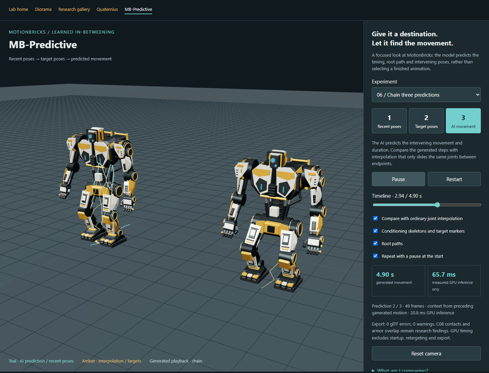
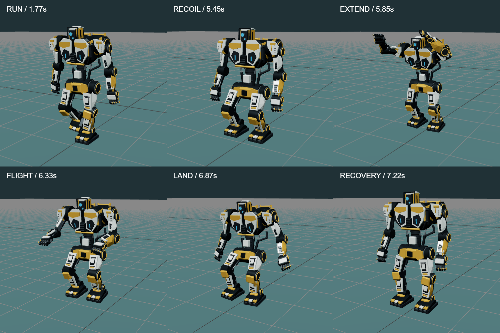

From a swaggering first walk to reactive courses: the stack, experiments, wrong turns, evidence and unfinished questions behind C08 Motion Lab.
90 Kimodo gallery takes98 game motion types / 204 takes4 gallery bodies / 2 game robots13 control audit families
Entry index
4 November 2026 · Planted contact and a level side-trip path · Experiment 36
Let the blocked foot start the fall
The creator finds the sideways ukemi promising, but identifies an unnatural first step: the character rises vertically before rolling. The collision controller was raising the whole actor to clear a low hurdle, using the same kind of clearance path needed by a vault. That made the side fall read as a hop. The intended reaction starts with a leg that cannot continue through the object, followed by joint compression and loss of balance.
The side-trip controller now keeps its ground reference level. It captures the impacting foot at contact, clamps the footprint to the near side of the collision box, and holds that sole while the hip and knee yield. The contact phase lasts 0.50 seconds; its influence then releases gradually through 0.76 seconds. A controlled pelvis drop of up to 18 centimetres combines with torso tilt and twist, and the leg IK bends the existing joints while preserving bone lengths. Per-seed source entry timings skip the generated idle preparation so the contact phase can lead into an already falling pose instead of rising back to a fresh standing start.
Both low hurdles and tall solids now keep the sideways reaction on the approach side. The character rolls away into a checked clear route using the opposite-side pool. This replaces entry 35's low-hurdle crossover rule; there is no upward hurdle-clearance arc in the active side-trip path. Ctrl+A/D, the three seeds per side, per-entry random selection and synchronized comparison still apply. A blocked route does not launch a roll.
This round reuses the same six generated Kimodo performances and their existing processed clips. It adds a kinematic collision-contact layer and timing changes, rather than another generation batch or a force-driven fall simulation. The front/back ukemi sources and their approved behavior are retained. The library remains 98 motion types, 204 takes and 408 body clips, with the original 94-animation default packs intact. Record / Save take bakes the planted-foot correction, controller path and played skeletal poses; source downloads retain their original generated motion.
Local validation covers both robots and all six side takes: 20 contact checks and 26 side-roll checks pass. The first 0.4 seconds keep the controller root level, the blocked sole within 1.5 centimetres of its anchor and behind the obstacle face, and show knee flexion/leg compression without changing leg lengths. Compared bodies keep independent foot anchors. Two recorded GLBs export with zero validation errors or warnings and retain contact/seed events. Staged and live verification are recorded separately; these local measurements do not establish complete physical simulation.
Review the foot at the obstacle, the knee and hip yielding above it, the pelvis height through the first half-second, and the release into the roll. The foot constraint and level controller path do not establish learned balance, correct impact forces or complete mesh-to-environment physics. Visual acceptance of the transition and each body/seed remains open. Replay the left strafe collision and right strafe collision from the footer trials.
4 November 2026 · Sideways judo and skateboard fall candidates · Experiment 35
Turn a lateral collision into a sideways breakfall
The creator describes the front and back ukemi as great, then asks for the strafing collision reaction to become a sideways judo or skateboard-style breakfall with several seeds. The previous knee-and-hand brace remains documented in entry 34 as the earlier experiment. The active lateral reaction now uses newly generated sideways performances. The approved forward/backward pools keep their existing behavior.
Six new Kimodo takes cover left and right: seeds 4411 and 5522 request a judo-style side breakfall, while seed 6633 requests a skateboard-style side fall and recovery. Each source lasts five seconds at 30 frames per second. Native idle poses constrain frames 0, 137 and 149, with lateral displacement targets of approximately 1.8 metres in the corresponding direction. These are separate neural predictions, not reversed playback of the front roll or the old authored support pose. They are retargeted to C08 Worker and B-REK43, bringing the review library to 98 motion types, 204 takes and 408 body clips. The original 94-animation default packs remain unchanged.
Ctrl+A and Ctrl+D still select walking strafes while keeping camera-heading facing. Actual collision chooses the side-fall action and the existing Variety policy chooses an eligible seed for that action. A held move keeps its selected take, both compared robots share the seed, and explicit library previews remain pinned. For a low 12–70 cm hurdle, the controller can continue the roll across it when the route and destination are clear. At a tall solid, the character rolls away from the wall and selects the opposite-side pool. A route without clearance is rejected. This directional selection and obstacle trajectory are authored controller rules; Kimodo supplies the recorded skeletal performance.
Review the drop, body turn, shoulder/back contact, leg clearance and return to standing at normal and slow speeds. A sideways fall can be readable without matching formal judo technique, and a visually promising generated pose sequence does not establish physical balance or complete body/environment collision. Technical checks and recordings for this round are recorded separately below; visual acceptance of each body and seed remains open.
Use the footer Action trials or start at the left strafe collision and right strafe collision. Inspect the seed in the HUD, or compare a pinned left-side source and right-side source. Record / Save take captures the selected performance together with the played controller motion and variation events; individual source downloads retain their source semantics.
4 November 2026 · Seed variety, directional trips and new sprint candidates · Experiment 34
Choose a take once, then react in the direction of travel
The creator asked for variation when repeating an action, real forward and backward breakfalls after hitting low objects, more sprint candidates, and Ctrl-modified backward/sideways movement. Sprint seed 822 was reported to glide. It remains available for explicit comparison, but is excluded from automatic sprint selection. Four new sprint seeds—1233, 1644, 2055 and 2466—use the same six-metre-per-second path constraint and prompt as the existing sprint. The automatic sprint pool consists of seed 411 and these four candidates. Generating more seeds provides alternatives; it does not establish that foot sliding has been solved.
Variety is enabled by default. Each new motion-state entry draws from a shuffled bag of eligible takes, without immediately repeating the last take when alternatives exist. The selected seed stays fixed while an action plays or a locomotion loop continues. Both compared robots use the same selected seed. Current-version Reject reviews exclude takes from automatic selection for the visible bodies. Explicit library previews remain pinned, and disabling Variety uses an eligible preferred take or falls back to an eligible alternative. Both modes exclude automatic-ineligible takes, including sprint 822 and incomplete roll 303, and current-version Reject reviews; an explicit library preview can still inspect them. A recording logs the selected take, seed and selection policy; replaying a saved take does not draw another random choice.
Three new forward rolls use seeds 1101, 2202 and 3303. These are genuine Kimodo predictions conditioned by full-body landmarks from the creator's cleaned forward-ukemi capture, with native idle poses at the ends. The conversion removes the capture's reference bone frames before forming local rotations. It does not reverse the earlier backward clips. The exact prompt embedding was already cached, so this round did not load another Llama encoder or upload the video. Peak Torch allocation during the forward generation was about 1.13 GiB; that is not total GPU memory consumption.
Direction diagnostics distinguish the results: all three new native forward takes turn through approximately +360 degrees, whereas earlier seeds 101 and 202 turn approximately −360 degrees. Earlier seed 303 does not complete an inverted roll and is retained for manual inspection only. Those earlier files were initially named forward ukemi; the backward label follows the creator's visual feedback and the measured rotation direction. These checks identify rotation and inversion, not certified martial-arts technique.
Retargeted rolling poses need explicit target-mesh cleanup. The game derivative uses a common active source window across both bodies, removes horizontal root travel, and applies a smoothed whole-skin floor-clearance envelope sampled at 30 Hz. C08's armor needs substantially larger vertical corrections than B-REK43. This is an authored body-height adjustment, not a learned support or balance solve. The immutable generated motion and raw retargeted sources remain available separately, including their original floor-contact defects. Armor self-contact, weight transfer and recovery silhouettes still need visual acceptance.
A grounded standing character moving at least 0.65 m/s can trip on a solid object 12–70 cm above the local floor. Actual controller contact, travel direction relative to facing, a clear rollout and a contact cooldown are required. Forward travel selects a forward roll; backward travel selects a backward roll. Jumping, crouching, carrying, overhead obstacles and high walls do not enter this rule. A roll commits through its inversion; the final recovery becomes interruptible after 72 percent of the action. The controller supplies the obstacle-clearance trajectory. This is deterministic collision logic plus a selected generated pose sequence, not Kimodo inferring an obstacle response online.
While the game viewport has focus, Ctrl+S walks backward at 1.25 m/s, and Ctrl+A / Ctrl+D select walking strafes while keeping the body facing with the camera. These mapped chords suppress the browser's Save, Select All and Bookmark actions only within the focused game. Other browser shortcuts, text fields and modal panels keep their normal behavior; plain C remains crouch. A backward collision selects backward ukemi. A sideways collision against a grounded solid at least 12 cm high, including a tall wall, instead uses a side-specific stumble with one knee and a supporting hand on the floor, followed by recovery. That brace is a separate authored contact layer, not a full roll or newly learned fall simulation.
The expanded review library contains 96 motion types, 198 takes and 396 body clips. The original 94-animation default packs remain unchanged. Preferred and Kept exports can include the added ukemi motions; individual source exports preserve their raw motion semantics. Record / Save take bakes the controller and contact layers from the played chain and retains its variation events. Review quality per body, particularly sprint support phases, backward recoveries and the side brace, before choosing game assets.
Action trials provide reproducible starting points: forward trip, backward trip, left strafe stumble and right strafe stumble. Compare both robots, inspect the seed in the HUD and disable Variety when an exact preferred take is needed. Numeric controller checks and inspected frames remain distinct from the creator's next visual review.
Technical checks pass for the eleven modifier/sprint cases and ten variation/ukemi cases on both robots. The independent asset audit covers 756 raw body clips and 36,900 expected joint samples, with a maximum position discrepancy of about 0.034 mm; all 396 game derivatives are finite and their cyclic seams close exactly. These measurements test input routing, selected-take behavior and file/playback consistency. They do not establish natural-looking sprint support, physically balanced falls or final visual acceptance.
3 November 2026 · Ledge contacts and high-drop landing
Grab the ledge, then keep the landing readable
The creator asked for a jump beside a high wall to catch its ledge and pull up, plus a superhero landing with one knee down, the opposite fist grounded and the other elbow raised. The earlier short mantle had no sustained hang. The new high-ledge trial uses a purple 2.65 m platform; the drop trial starts above a clear landing pad. The footer Action trials selector replays either setup on the chosen body.
The ledge sequence has load, leap, catch, hang, pull-up, top-out and settle phases over 2.45 seconds. Hand targets stay fixed at the lip during the catch/hold, then release during the pull-up. Calibration measures the original rigs' shoulder heights, arm reach and limb lengths after normalization to 1.9 m. The landing point must have standing clearance; hand-width checks reject corners without room for both grips. Existing low barriers retain the shorter vault/mantle behavior. Tagged walls at least 1.9 m high use the ledge sequence, up to a 2.85 m limit; this is not unlimited wall climbing. C releases the ledge, and an attack also releases it into gravity.
A real downward impact after at least a 1.6 m drop and 4.5 m/s downward speed selects the superhero landing. Small standing and high jumps retain their normal landing behavior. The authored pose plants the right knee and left fist, keeps the left foot supported and bends the right elbow upward. A short compression leads into the pose hold and a smooth standing recovery over 1.65 seconds. Fresh movement, C, attacks or Space can replace the recovery. Facing is held during the contact pose so orbiting the camera does not drag the planted fist across the floor.
These are authored pose/contact layers and controller trajectories over the existing generated mantle and hard-landing sources. No fresh Kimodo inference was run for this round, and the 94-type source catalog, two seeds, original meshes and default packs remain unchanged. Two-bone solving preserves segment lengths; knee-shell offsets are calibrated for these two robot meshes. The new runtime layers are included by Record / Save take. Original source and in-place pack exports retain their earlier semantics and exclude runtime contact/controller layers. The recorded samples below contain a continuous climb, walk off the platform, fall, hero landing and recovery.
Testing uncovered two useful controller defects. Floor support used a narrower footprint than horizontal collision, so an actor could begin falling while still overlapping an edge and become stuck against the wall. Both now use the same capsule-footprint radius. At action completion the old clip could also be sampled at an unrelated local clock for one frame while the next asynchronous clip loaded. Holding the last evaluated source time until replacement removes that discontinuity. Traversal source pelvis lift fades out at top-out instead of reappearing after the controller flight finishes. Comparison now follows actor facing, rather than sliding the second model through the wall when the camera orbits; it remains a pose mirror without independent collision.
On both bodies, checks cover reachable ledges, locked hand joint targets, top-out clearance and continuity, real platform drops, knee/fist surface clearance, raised elbow, ordinary-hop exclusion, recovery interruption, ledge release and recording/export. Two recorded GLBs pass structural validation with zero errors and warnings. This establishes the tested controller/contact recipe, not a physically simulated climb or acceptance of every silhouette. Hands, armor, self-collision and transitions still need visual review at different approach angles and speeds.
3 November 2026 · Input cancellation and contextual traversal
Separate game input timing from a generated performance
The creator reported that Alt evade could feel stuck, C played a static kneeling pose, Space could not interrupt either stance/action, and another mouse click could not restart a punch. These were controller failures. The old controller rejected new actions while busy and used the entire roughly six-second performance as its action lock; crouch waited for a full multi-second transition. More generated clips would not repair that behavior.
The new rule is latest explicit action wins. Evade uses a 0.32-second, collision-limited displacement burst. Fresh WASD movement, C, another action or Space cancels it immediately. LMB alternates jab/cross and every click restarts an action, including the click that captures the pointer. Space preempts punches. Attack sampling uses selected active windows at short authored durations, with a 65 ms pose blend. The original complete clips, source hashes, seeds, preview identities and review histories are retained. These windows are diagnostic candidates selected from source motion landmarks; they are not proof of correct combat technique or smooth acceleration.
Single C immediately selects crouch locomotion, with a held support pose while stationary. A quick C C within 300 ms holds the original crouch-down ending as a static kneeling/seiza pose. Movement leaves seiza into crouch. Space jumps immediately from crouch or seiza when there is standing clearance; a tunnel roof must still block it. A normal second C toggles out of crouch. The live game no longer needs to play the complete enter-crouch performance before accepting another input.
Browser modifier follow-up: Ctrl itself is not crouch, but the old key listener treated Ctrl+C as plain C while the browser also received Copy. Ctrl/Command browser shortcuts now bypass gameplay and clear held input; they cannot crouch, kneel, attack, move, pause or start recording. The explicit Ctrl+Space high-jump exception remains. Tests cover modifier key events, actual Ctrl+C presses, consecutive C C isolation and ordinary crouch-to-jump afterward.
Physical flight now has its own lifetime, separate from the animation action. Replacing an airborne animation cannot suspend gravity. Jump anticipation is 65 ms, followed by the existing source takeoff/air/landing mapping. Step-off ledges fall under gravity. Late asynchronous clip loads carry generation tokens, so an old attack cannot return after the user has already requested a jump. Critical clips are warmed in parallel; a cold visual asset can still arrive late, but its request no longer locks gameplay.
Space also tests the environment in the intended movement/facing direction. Close, explicitly tagged low barriers select a vault; reachable tagged walls with free standing room select a climb onto the top. Other cases use the normal speed-sensitive jump. Ctrl+Space forces a normal high jump. The blue training wall and gold barrier have a direct traversal-yard starting link; the HUD previews the selected Space action. Surface range, height, approach direction, destination occupancy and the swept route are checked. Roofs, benches, terminals and perimeter walls cannot become climb targets by proximity alone.
These traversals are authored root trajectories driven by generated skeletal poses, not learned collision avoidance or a physical climbing policy. The mantle approaches the ledge, briefly guides the hands toward its edge with a fixed-length two-bone solve, lifts, crosses and settles on top. Source pelvis lift is bounded to avoid adding height twice. Vaults lift, cross and land. A blocked route aborts into gravity. Exact hand/foot attachment, mesh-level clearance, multiple ledge heights and visual contact quality remain research tasks. Compare is an offset pose mirror; only the selected character interacts with the course.
Pickup/putdown attach/release events are independent of action completion: cancelling before pickup leaves the box on the ground, cancelling after attachment keeps it carried, and cancelling after release leaves it placed. Character recordings still exclude prop geometry and trajectories. The guided course now cues vaults nearer the barriers and completes in roughly 97 simulated seconds. This supersedes the earlier tour timing; it does not alter the original source performances.
Validation covers actual keyboard/mouse input, both C08 and B-REK43, repeated click/replacement, single/double C, crouch/seiza jumps, delayed-load cancellation, vault/mantle landing, ceiling and boundary rejection, committed prop events and finite recorded poses. Separate regressions cover all 376 clips, review persistence/export, controller presets, four viewport layouts and the full guided tour. Responsive input evidence · Authored source windows · Updated control study. Technical checks and inspected still poses do not establish final visual acceptance.
3 November 2026 · Public playback and evidence · Experiment 31
Publish the experiment, keep the inference environment separate
The Kimodo gallery, Game Kit and control study now have public static pages. The existing repository remains the motion-lab home; a second repository would split the evidence. A visitor plays recorded animation and a browser controller. No hosted inference endpoint, account login, model-weight download or local GPU service is required.
The local exports contain about 1.4 GB of repeated character meshes. Publishing that folder directly would exceed our existing Pages budget. The public transport therefore shares the original character assets and stores content-addressed animation tracks, reports and packs under the repository's research assets. The viewer retrieves them from GitHub's raw asset host. All 736 source clips pass a float32-exact key-time/value round trip. Gzip is transport, not motion cleanup; it does not reverse earlier filtering, retargeting or loop authoring. Separate joint samples allow the browser adaptation to be checked against the original Blender export evidence.
A source-motion GLB exported by the browser is a rebuilt file, with different binary bytes from the original export hash. Those original hashes remain in provenance. Game-source exports use the displayed normalized character scale. Default in-place packs exclude live controller travel, inter-clip blends and foot/hand IK. A recorded play take bakes displayed character transforms and IK; its prop meshes and prop trajectories remain separate.
Browser feedback is origin-local: localhost and this public site have separate stores. Export all reviews from one, then import into the other to transfer comments, scores and decisions. Earlier candidate IDs and the original research remain intact. A Keep is a reviewer decision, not an automatic consequence of structural validation.
The NVIDIA Open Model License distinguishes generated outputs from derivative models and says NVIDIA claims no output ownership; the user remains responsible for subsequent use. We distribute generated motion and permitted character assets, not weights or a training dataset. Original robots are creator-owned. The Meshy-described fighter retains Tulio Portela's CC BY 4.0 attribution and this lab's production exclusion. This is separate from the earlier MotionBricks bundled-animation permission question.
2–3 November 2026 · Controls and motion audit · Experiment 30
Study action expectations before adding more clips
The single-page control study compares RDR2, The Witcher 3, Elden Ring, Resident Evil 4 and GTA V on PC. RE4 means the 2023 remake; Witcher references the classic publisher keyboard chart. Publisher manuals, an actual in-game mapping capture, a platform input reference and explicitly identified first-hand reports are distinguished. These are documented references, not local tests of five installed games or a survey of players.
WASD and mouse input provide a common starting point. Space, E/F, crouch, evade and combat focus differ substantially. The published Elden Ring Japanese keyboard appendix conflicts with the familiar launch-layout report; both are linked. We cannot infer from that discrepancy that a patch changed every player's defaults. A successful game's action design is more transferable than copying its exact keyboard assignments.
The playable Hybrid preset separates exploration facing travel from RMB camera-heading focus/strafe. Shift sprints with a hold/toggle choice; Space jumps; Alt triggers the existing evade actions; C crouches; E shows and invokes a supported contextual interaction. R is reserved for reload, while Shift+R records. The unarmed lab has no reload system. Q/MMB recenters the camera and V changes the focused camera side. Original Lab controls remain selectable and the preset persists. Focus is not held guard; recenter is not target lock.
The inventory audit checks 62 referenced current motion types against the 94-type Game Kit and identifies five reusable earlier sources among the 90 Kimodo takes. Guard, footwork, block-counter, slip and the reviewer-labelled backward shoulder roll are useful inputs. Missing game-ready states are not necessarily missing source performances. Reuse and segment those sources before requesting more generation.
The thirteen audit families separate animation, controller and metadata work. P0 includes gait phases/pivots, sustained guard, real target-facing movement, short evade versus roll, fall/landing phases, responsive stance changes, carry contacts, action timing/context and input configuration. P1 covers weapon layers/reloads, cover/traversal and directional reactions/ground recovery. Swimming, vehicles and magic wait for a game design that needs them.
Code inspection matters: clip changes currently reset gait phase; non-jump actions decelerate travel, so a dodge pose alone does not implement evasive displacement. Busy actions reject input without explicit buffer/cancel windows. Source stance transitions can last seconds. Crouch-to-stand checks headroom, but every exit path needs consistent treatment. More isolated motions do not supply these missing connections. Each audit family has a concrete acceptance test and links to present candidates.
2 November 2026 · Failed prompts and pose-conditioned recovery · Experiment 29
Give the jump an airborne target the model must reach
Several detailed text-only jump requests yielded running steps or small hops. Shortening the language alone did not consistently fix them. Treating every result as a successful jump and adding an attractive game trajectory would hide the source failure. Those trials remain local before/after evidence; the selected public sources use the corrected round.
A stronger high-jump take supplies five full-body anchor poses: standing, loading, airborne, landing and recovery. We translate the anchors along per-behavior paths, then use Kimodo's native full-body constraints to predict intervening motion. Seven behaviors with two seeds produce fourteen replacement candidates. The existing high and walking jumps complete eighteen selected jump sources with a detected airborne interval. That detector is a diagnostic, not certification of a technically correct or balanced jump.
For the game, anticipation, flight and recovery are explicit windows. The in-place derivative removes the source airborne root arc so the controller does not add jump height twice. The browser maps those windows onto its game arc and chooses a jump from approach speed and direction. This is model-generated skeletal motion plus authored controller timing, not an end-to-end learned physical jump policy. Early/late landings, leaving ledges, support changes and land-to-run still need reusable states and careful review.
2 November 2026 · Third-person game candidates · Experiment 28
Build a controllable set around two robots
The separate Game Kit focuses on C08 Worker and B-REK43. Ninety-four motion types, two generated takes each and two original rigs yield 376 character clips. Two default character GLBs contain 94 candidate animations each. This is an extensive review set, not a statement that every clip is ready to ship.
Coverage includes eight-direction walk/jog/run and crouch movement, forward sprint, crawling, carrying, pickup/put-down, speed-specific and directional jumps, stance transitions, start/stop/turn probes, combat, reactions, get-ups and environmental interactions. Locomotion loops use an interior phase search, an overlap seam blend and a light symmetric rotation filter. One-shots keep destination-state semantics. Closing a loop's position/quaternion endpoints does not establish contact quality or a continuous velocity seam.
A coordinate mistake was caught before publication: SOMA +X is anatomical left, while a typical input axis uses positive values for right. Fifty-six corrected lateral takes were generated separately. The retarget cache now checks source hashes so a corrected input cannot silently reuse an old bake. All original trial outputs remain separate from the selected source set.
The browser owns character travel, acceleration, game jump arcs, state blending, collision and bounded foot/hand IK. Both bodies are normalized to 1.9 m. The long course contains orange run and red sprint lanes, jump barriers, a crouch tunnel, solid walls, a box yard, bench and terminal. Collision is a swept substep capsule approximation; the camera raycasts against walls. Compare is an offset motion mirror: only the selected actor has collision. A complete guided course chains movement, jumps, crouch, carrying, combat and recovery in roughly 117 simulated seconds.
Review saves every score/comment/decision as it is edited. Preferred pack selects the chosen take for each motion; Kept clips only includes matching current-recipe Keeps among those preferred takes. Recording samples live play for up to 120 seconds and exports character movement/IK plus provenance. Source hash, body and version remain associated with the result.
Ground/get-up, seat, ladder, vault and mantle contacts remain probes. Retargeted raw ground cases include severe floor intersections, approximately 66 cm in the worst sampled source. They are not silently grounded. A one-shot block is not a sustainable guard, and a ladder-climb clip is not a complete mount/up/down/dismount system. Engine import and gameplay acceptance remain outstanding.
2 November 2026 · Combat, categories and continuous playback · Experiment 27
Keep combat moves readable and transitions explicit
Twelve single-actor combat behaviors with three seeds add 36 generated takes and 144 body clips. The Fight category includes guard, straight punches, jab/cross and other combinations, defensive counters, footwork, shadowboxing, kicks and a mimed grab/pull/turn. The full Kimodo gallery now contains 90 takes across four bodies: 360 supplied character clips.
Use a clear person/action description and a short combination. The retarget supplies the robot body. A request involving an opponent is a single-actor mime here: there is no second body, verified grip or contact force. Fingers retain the rig's rest configuration; gross arm movement is not detailed fist articulation. The creator describes this round as convincing and the strongest animation result so far. That is qualitative review, not a controlled benchmark against the earlier methods.
The gallery categories are Basic, Ground, Gestures and Fight, with All available. Random cycles the selected category, avoiding an immediate repeat of the same action family. It plays action, authored return, a short exact neutral hold, authored entry, then the next action. Standing bridges add sequential foot lifts and bounded two-link IK. Ground returns still use simpler pose blends and need visual review.
The bridge is authored browser playback, not a new inference call. Neutral posture is shared, but world travel stays at the action's end location. Matching the neutral pose and eliminating a teleport do not solve balance or a natural get-up. Reach targets can be projected to preserve bone lengths; sampled standing projections reached about 4.94 cm. Source-motion downloads exclude these bridges. Opening Review pauses random playback so a rating stays attached to the visible take.
2 November 2026 · Text, speed and anatomical retarget · Experiment 26
Generate on SOMA, then adapt to the original bodies
The first real pilot generated fifteen takes from five behaviors and three seeds. They were retargeted directly from native SOMA motion to C08, B-REK43, EVA-K7 and the attributed Meshy-described fighter. No intermediate G1 motion or new MotionBricks inference is used. The earlier issue where only a standard SOMA/Unitree preview was visible was a viewer scope issue; the own-biped gallery displays the actual supplied character geometry and skins.
The retarget keeps original geometry, weights and segment lengths, with one retargeted-neutral floor calibration per body held constant across frames and takes. Source jump height, inversion and horizontal travel remain. An earlier bind-floor calibration was rejected after visible C08 floor error. The retained baseline still has contact artifacts; it does not apply target support IK or physical balance to the raw clip.
The next 39 takes expanded running, crouching, crawling, gestures and roll attempts. Text-only medium/fast running speeds overlapped around 1.8–2.3 m/s, so words alone were not a speed guarantee. Native dense root paths requested 1.2, 3 and 5 m/s. Observed source net speeds were approximately 1.194–1.205, 2.994–2.995 and 4.991–4.996 m/s, with about 10.6 cm maximum smooth-root path error. These are SOMA-scale measurements; character travel scales with body proportions. This was constrained generation, not just faster playback.
The reviewer found the roll attempts good but backward, despite their forward-ukemi prompts. Their displayed names now say backward shoulder roll; original IDs, prompts, source bytes and review identities remain. Requested semantics, actual performance and file integrity are separate findings. A head-below-pelvis count alone cannot establish a correct martial-arts roll.
1–2 November 2026 · Isolated environment and first inference · Experiment 25
A separate text-and-constraint generation avenue
Kimodo is a separate experiment alongside MotionBricks, capture recovery and the Quaternius baseline. It accepts text and geometric constraints and predicts humanoid skeletal motion. This lab uses Kimodo-SOMA-RP-v1.2, checkpoint revision 0e3c89024d896064b6851201373f7834784a386b, with upstream e1c219c99b4b94ba48be1fb6a1cbc64ecee4c954. Native motion postprocessing is enabled.
The isolated Windows environment uses Python 3.12.14, PyTorch 2.10 with CUDA 12.8, Transformers 5.1 and a native MotionCorrection build using w64devkit. The official Llama 3 / LLM2Vec text-encoder path required account approval and local authentication; a stalled shard download was recovered with bounded resume and hash verification. Credentials and model files remain local. There is no substitute text encoder hidden behind the results.
The first fifteen four-second takes needed about 26.9 seconds of measured generation after loading; initialization, encoding startup, retargeting, export and validation are excluded. The observed inference machine has an RTX 4090 with 24 GiB VRAM and 96 GiB system RAM. Those are observed provisioning details, not established minimum requirements or public-browser requirements.
Prompts and poses offer different control. Text is useful for broad style/action, while paths make requested travel measurable and full-body anchors can establish important states. None of this implies automatic perception of our scene obstacles, physical balance, quadruped support or a finished game controller. The promising result is another tool in the lab, with input and postprocessing responsibilities kept visible.
The anchored candidate received positive visual feedback. The new Anchored bipeds section builds directly on it: C08 remains the exact published reference; B-REK43, EVA-K7 and the attributed Meshy fighter follow the same six moves on one elapsed-time clock. All earlier research and reviews remain separate.
At load, Three.js samples the actual C08 animation at 120 Hz, applies world rotation deltas to each target bind skeleton, scales pelvis travel by bind pelvis height, and keeps target bone translations and lengths fixed. Declared source support weights and segment identities drive two-link leg IK with continuous quaternion interpolation. Only a constant initial whole-avatar floor calibration is applied; there is no per-frame body-floor clamp. This introduces no new MotionBricks inference. The geometry and weights come from existing rigged body artifacts.
Different proportions can put a requested planted ankle beyond leg reach. The solver clamps the target instead of stretching bones, and each character's Details panel reports how often this happens. These adaptations do not inherit C08's measured full-skin floor guarantee. Floor rolls, foot shape, armor overlap and hand/back support need fresh visual review. The browser creates the actual adapted clip once; Export GLB saves that clip with the target body. Per-body reviews use a new collection, preserving previous reviews. Meshy attribution and its test-only production exclusion remain visible.
31 October 2026 · Capture cleanup and transition round
Keep the capture; improve its support and recovery
The creator's reported visual feedback favors cleaned recovery for ukemi and sumo stomp, while still requesting further work. Both MotionBricks target strategies produced gibberish on the ukemi comparison; the reviewer describes sumo as the same pattern. The MotionBricks dance, however, looks promising. That dance observation applies to the family of neural variants, without selecting one winner or giving a numerical score.
The repeated capture issue is foot flutter: soles hover, tilt or drift when they should support the body. A smooth return to a default pose is also needed for linking actions. The next candidate therefore retains the cleaned capture as the performance and applies an explicitly authored support/transition pass. It is separate from the original raw, filtered and neural experiments, which remain available unchanged for before/after review.
Support and default pose are separate jobs
An anchor should hold a supporting foot, not freeze every foot near the ground. The sumo lift must remain a lift; a rolling ukemi and a hand-supported stand-up must allow feet to leave the floor. Flat-sole correction belongs to a full-foot support interval. A hand/back-supported interval needs its own interpretation. The candidate's reports must make those intervals and their corrections inspectable, including any rejected or released support request.
Entry and recovery should bring the character to a shared relaxed default, with deliberate weight transfer and a controlled root path. Traveling actions retain their displacement: the final default posture is at the action's end location, rather than teleporting to the starting location. Root-relative posture closure and the root displacement are separate measurements. Matching the first and final posture does not prove that entering the roll, getting up or regaining support looks natural. Any authored transition, root correction or support solver must be identified as such; this round is not a new MotionBricks inference result.
What this round actually achieved
Six new C08 bakes retain all original capture timestamps inside an authored entry/action/recovery sequence at 120 Hz. Accepted flat-support cores in the neutral, entry and recovery phases hold the soles at a 6 mm target, with drift below one micrometre in the independent kinematic check. These phase-specific measurements are separate from the captured action, so a long neutral hold cannot make the action's foot statistics look better.
Sumo has action foot constraints: the left foot stays planted while the right releases for its lift and then replants. The accepted action support intervals retain flat soles near 6 mm. For ukemi, dance and the other three captures, the action's cleaned leg rotations remain unchanged and action foot-lock metrics are explicitly N/A. An earlier ukemi leg-IK attempt increased jitter, so it was not retained. That is a deliberate tradeoff: stabilize the authored return and smooth the body-floor trajectory without claiming that every flutter inside the captured exercise has been removed. The ukemi action is not being reclassified wholesale as hand-supported.
The sampled complete-body floor clearance is approximately 4 mm, with no below-floor samples in the independent check. All vertices are sampled at 120 Hz for ukemi and sumo, and at 30 Hz plus 120 Hz transition-boundary checks for the other four. This is sampled geometry evidence, not a continuous collision or balance proof. Body/hip motion and the new recovery still require visual review. The traveling root displacement is retained, including about 4.18 m in the ukemi estimate; closing the default posture does not reset that estimated path.
A cleaner comparison
The compact viewer opens with the cleaned reference beside the new anchored candidate when that candidate is supplied. Only selected methods determine the comparison timeline. Options retain an Original research preset for all four earlier methods, including the rejected ukemi/sumo reconstructions and the promising dance. Up to four methods can be shown at once, preserving the above-the-fold layout and the Focus control.
The prior capture and neural review identities stay unchanged; the anchored method has its own candidate/version identity. Conversation verdicts are stored separately from browser reviews and attached as metadata to Export all reviews. No scores are invented and no prior comment is replaced. Review support stability, sole orientation, torso/hip movement, the action itself and the entry/exit rather than treating low drift as an acceptance certificate. A kinematic support pass is not a physical balance or self-collision controller.
The earlier comparison pages put long introductions, warnings and diagnostics above the actual movements. Four-way comparisons required scrolling between the original capture and the neural candidates. The new layout keeps the animations and essential playback controls in the first viewport.
Mocap Rebuild and Biped capture use a viewport-sized comparison grid with a Focus/Enlarge action for closer inspection. Phone landscape uses a single row of four views. H3 keeps source and recovered video labels visible while moving explanations, artifact downloads and review forms into panels. Reactive Arena, MB-Predictive, Vanilla 15, Quaternius and the original research gallery now put their essential selectors above a full-height stage.
About, options, key poses, diagnostics, downloads and review forms remain available in native HTML dialogs. Their original DOM nodes and IDs move into those dialogs, so existing review records, selection state, event handlers and exports remain connected. Dialogs have visible close buttons, native focus containment, Escape dismissal and focus restoration. Keyboard activation of panel buttons works without triggering playback shortcuts behind the panel. Required Meshy attribution remains visible with its full notice available in Details/About.
The comparison cameras now fit the projected bounds to the available screen aspect instead of fitting an oversized sphere. Biped bounds sample 17 poses for safer framing. Switching comparisons also releases old textures and rendering contexts. These are viewer and resource-management changes: animation keys, inference results, rigs, source recordings and conditioning data remain unchanged.
Validation covers eight viewers at 1366×768, 1440×900, 390×844 and 844×390: 32 viewport cases with no document scrolling or clipped primary views/selectors/playback controls. Separate regression checks retain all 24 Biped and 24 Mocap artifacts, 408 sampled camera poses per gallery, generated-arrival seeking, H3 versioned review history, review persistence and all-review/Keep exports. Legacy checks cover WASD, random mode, source comparison, Reactive body/section controls and local-generation access. These checks concern presentation and functionality, not improved motion quality.
From our own capture to generated in-between motion
The creator found the recovered motion recognizable but rough: jitter remains, and a raw recording does not form a clean default/action/default loop. The next Mocap rebuild pilot compares six performances on C08 using four approaches: the previous raw recovery adaptation, cleaned recovery, actual MotionBricks SOMA generation toward single poses, and generation toward short consecutive target windows. Reinterpretation is explicitly allowed. This is a separate experiment from the four-body capture gallery.
The change we are testing
The six private reference recoveries already exist. We preserve them, clean a separate copy and select action milestones from that motion. The generated methods use MotionBricks' SOMA model rather than fitting through G1 robot hinges. Four recent poses condition each request; the actual last four generated poses feed the next one. A single target describes an arrival posture; a short consecutive target window also communicates the movement at arrival. Widely spaced action milestones remain separate requests.
The goal is a default stance, a readable action and a deliberate return to the same default stance, with quiet boundaries. A matching first/last pose is only a seam property. It does not prove weight transfer, believable support or fidelity to the original exercise. Raw and cleaned recovery keep their own timing; generated transitions choose different durations. The gallery therefore defaults to elapsed seconds, where shorter clips hold at their final pose. Optional normalized progress changes display playback speed so clips finish together; it does not align source events or modify exported files.
What actually ran
The FP32 SOMA model made 96 genuine neural requests: eight for each of the 12 generated variants. Seven source landmarks were selected greedily by the largest body-trajectory deviation from piecewise linear paths, with at least eight frames between landmarks. The cleaned copy uses sign-continuous local quaternion averaging and root-position Gaussian filtering with sigma 1.15 frames; child translations use their fixed median values. These are automated geometric choices, not manually verified martial-arts phases or a support solve.
Each generated variant includes an authored 12-frame neutral hold, neural transitions through the selected landmarks, a neural return to the same default and an authored 12-frame final hold. The source skeleton's endpoint matrices match exactly in the generated files; independent target-rig seam checks are separate. Static holds must not count toward the active-motion jitter comparison. The cropped gorilla reference uses an explicitly reported reliable prefix for neural targets; full raw and cleaned controls remain available. Per-method traces show excluded ranges, actual source key times, generated arrival times and request durations.
Separate the contributions
All four C08 variants are exported under the same constant floor-calibration policy, including a new raw control. This keeps the raw-versus-cleaned comparison from being confounded by the previous per-key whole-avatar grounding. That older adaptation remains in the Biped capture gallery as history. Compare the two MotionBricks methods to assess target-window conditioning under their shared preprocessing and export path. Constant calibration can expose floor penetration; measurements are reported rather than hidden by a moving floor correction. All neural calls, selected source poses and generated segment boundaries are recorded rather than inferred from the result.
Floor rolls, hand-supported stand-up and the heavily cropped gorilla ending remain difficult. The H3 gorilla dance has unusual proportions and hidden arms. Cleanup can reduce rapid variation while removing intentional accents; learned reconstruction can make plausible transitions while changing the intended exercise. Foot contacts do not describe all hand, shoulder or back supports. We keep those limitations visible instead of treating a finite export or a closed seam as acceptance.
What the pilot shows so far
Under matched timing and constant floor calibration, the cleaned control reduces the measured p95 local-joint angular acceleration in all six performances. That is a useful smoothness diagnostic, not visual acceptance. MotionBricks does not consistently improve that measure over the cleaned source. Single-pose targets generally produce longer, more stop-oriented motion; short target windows produce shorter, more continuous transitions, with greater measured angular acceleration in this round. Different durations affect such derivatives, so these are candidate behaviors rather than a fair timing-normalized quality ranking.
All 12 neural variants have zero measured target-rig pose/root seam gap and zero starting/ending root speed, including the explicit neutral holds. Contacts remain unresolved. The Ukemi generated variants penetrate the fixed floor by approximately 0.532 m with single targets and 0.370 m with windows at sampled poses; those are visible failures, not clean rolls. The H3 dance single-target variant stays approximately 9 mm above the floor at its lowest sampled vertex, but that alone establishes neither believable support nor an accepted take. Per-method floor, seam and movement diagnostics sit beside each animation. There is no late moving-floor correction to disguise the failures.
Review every performance/method separately for anticipation, jitter, planted contacts, weight, action readability and the neutral return. Reviews use distinct method identities, save to the shared browser store and export in one file with the current pilot manifest. Existing captures, existing feedback and previous motion libraries remain intact. Source videos and weights are not published.
A separate cross-performance check finds that the neutral joint positions agree within 0.5 micrometres, but wrist orientations differ by up to 1.67 degrees between performances. Each generated clip still closes exactly onto its own starting pose. A production library should standardize those wrists or blend the remaining difference before chaining different actions. See the cross-clip default-pose measurement.
Evidence and reproduction: pilot catalog and the per-method reports and generation traces linked beside each supplied animation. The source Biped capture gallery remains available for the previous four-body comparison.
The creator reviewed all 13 previous H3 comparisons: five looked good, seven failed, and the estimated-camera-locked K0 pounce was promising but unnatural. The original verdicts and recipe versions are preserved separately from browser scores. Looking good is not final game acceptance. The controls and source videos differ, so this small round does not establish a general biped advantage over quadrupeds.
The next Biped capture gallery contains 24 actual supplied GLB comparisons: ukemi, technical stand-up, front-facing gorilla exercise, sumo stomp, BJJ floor flow into a shoulder roll, and an H3 stylized gorilla dance. Each is adapted to C08, B-REK43, EVA-K7 and the experimental Meshy fighter. All four retain their original rig and geometry; the Meshy fighter remains attributed to Tulio Portela under CC BY 4.0 and excluded from the production pipeline.
What changed in the pipeline
We verified source hashes and reused four existing GEM-X recoveries. Only the floor-flow and H3 dance needed new GPU recovery. The model estimates native SOMA77 motion; its exact transforms are then adapted directly to the four original biped rigs in Blender. This round has no G1 intermediate and no MotionBricks inference. It tests recovery and body adaptation, rather than learned in-betweening. There is no new Video2Rig reader training in this round.
The synchronized gallery preserves clip timing and allows camera orbit, slow motion, root-follow toggling and body visibility. A separate raw recovered skeleton view retains the source estimate before robot adaptation, with only a constant display translation. This helps distinguish recovery errors from retargeting errors. All six reference videos and their source frames remain local; public pages contain derived motion and reports.
Limits that need visual review
The front-facing gorilla reference has a heavily cropped ending: 55 of 239 recovered frames project at least five major joints outside the image, and 25 frames have missing or filled person detections. These are coverage warnings, not accuracy scores. No tail is silently trimmed. Hand-supported floor transitions and rolls remain particularly difficult: monocular depth, hidden legs, self-collision and real support cannot be established by a valid file.
The adapter translates the whole target vertically at each key so its lowest skinned vertex clears the floor by 15 mm. That is explicitly a presentation correction, not a contact or balance solve. It changes vertical root motion and may introduce bobbing; per-body offsets are reported. The raw skeleton is available without this correction. Source hand detail is not reproduced; fingers use the original rig rest pose. The unusual anatomy and generated imagery in the H3 gorilla dance are an out-of-distribution stress test for human recovery.
Review each body separately for support changes, shoulder roll direction, arm placement, knee behavior, floor contact and weight transfer. Save comments and scores in the browser, then export all reviews in one file. That export also attaches the previous 13 reported verdicts as separate metadata; it does not fabricate numerical scores. A kept clip still needs root-motion extraction, transition testing and an actual game import.
The new H3 / Video2Rig gallery separates reference imagery, known-motion controls, actual recovered rigs and processing comparisons. These outputs use Video2Rig or GEM-X, with no MotionBricks inference. A completed job means its artifacts are available for review; it does not mean good animation.
What we actually ran
The creator supplied a 12.25-second concept-biped walk/run/stop clip, a 12.25-second K0 pounce and a 6.58-second C07 jump, all at 24 fps. Video2Rig is pinned to 55d51b3b9685125a8ea27841d6af9523f6352aa1 in a separate G-drive environment. It learns joints from synthetic renders of a specific rig, then fits that rig to video readings. Our Blender 4.5.15 workflow runs without modifying upstream code; its external weights and trained readers stay private. No new paid generation service was activated.
We began with known-camera renders of our own native pounces. K0 used 3,000 random training poses, a 9,000-step full training stage after short preflights, and about 20 minutes for that stage. Synthetic held-out median error was 5.25 pixels front / 4.29 side. The independent recovered-motion result is more useful: across the 50 visible body-chain joints, mean world-position error was 11.2 mm and p95 was 26.1 mm at all 120 known timestamps. Local rotation median was 3.92°. C07's bounded transfer trial measured 26.7 mm mean / 79.7 mm p95. These are different-sized bodies and experiments, not a normalized cross-character ranking.
The original invisible MOTION transport node is reorganized: fitted LUMBAR absorbs its displacement. Reports retain both all-51-node and visible-50-chain statistics. A game must deliberately map or extract the fitted root. Native shoulder translations also exceed the rotation-only fitter's contract; an independent oracle records that representation floor before judging recovery. Valid exports do not make the controller or contacts production-ready.
The useful failures
A reader trained on wide native cameras was a poor fit for the close H3 view: reading confidence fell from 0.96 on the native control to 0.48 on H3. A separate camera-specific synthetic fine-tune raised it to 0.80. This is a reading-confidence change, not 3D accuracy against unknown ground truth.
Automatic camera alignment was another major issue. It applied approximately 2.44× scale plus offset/rotation to an estimated view whose starting body bounding box already roughly matched the video. We preserved that result and locked the estimated camera in a new fit using identical readings, masks and timing. This camera is still an estimate, not the original generation camera.
Same K0 H3 video
Opening 1 s median lowest-skin height
Largest adjacent quaternion step
Reused wide-camera reader / auto alignment
76.2 mm
178.7°
Camera-specific reader / auto alignment
56.2 mm
83.1°
Camera-specific reader / locked estimate
6.6 mm
96.3°
The reference is visibly standing during that opening interval. Heights are independent mesh diagnostics, not labeled contact or balance truth. Locking the estimate improves stance and gross posture, but the tail still has severe rotation spikes. The full locked clip reaches about 12 mm below the floor at some sampled poses. It remains a rework candidate. Controlled measurements and same-camera visual comparison.
Turning off root-from-steps and foot locking produced numerically identical K0 motion arrays: neither heuristic changed this clip. Stronger smoothing also retained a near-180° tail step. Switches and lower noise statistics cannot substitute for visual inspection. The available published C07 body differs substantially from its H3 starting silhouette, so its H3 fits are approximate-body negative controls, separate from its valid native-render control.
The concept-biped stress test used our existing human-oriented GEM-X estimator. It produced 368 SOMA poses at 30 Hz and an inspectable 3D skeleton, but the raw estimated root has a 5.88 m horizontal end-to-start gap despite the video's return toward its initial stance. The existing C08 adapter also needed up to 0.52 m whole-body grounding correction and has a small between-key floor penetration. This is an informative route through the complete pipeline, not a seamless accepted game loop.
Make the next inputs measurable
The new five-body reference pack provides 20 exact Blender starting frames and 20 companion TXT prompt menus. C08, B-REK43, EVA-K7, K0-Tech and C07 each have three-quarter, side, matched front/side and wide forward-action views. Packed Blender scenes, frozen idle poses, original asset hashes and camera manifests accompany them. Official Video2Rig camera parsing agrees with saved joint projections within 0.00088 pixels. Prompts request one action per clip and preserve camera, identity and framing; H3 compliance still needs checking.
The promising path is exact-character video recovery with explicit cameras and human cleanup. The dead end is treating arbitrary stylized imagery, a successful export or a confidence score as proof of faithful animation. Tail motion, hidden-limb depth, skin/floor contact, loop boundaries and dynamic weight remain open. This branch broadens quadruped experiments; it does not turn MotionBricks' humanoid models into quadruped models.
The handoff proposed an offline route from MotionBricks to an original humanoid robot and then to self-contained game animation files. We provisioned the existing Windows machine and used the creator’s C08 Industrial Worker. The first walk worked. Its swagger made the next question worthwhile: could this become a controllable, useful motion workflow?
The scope widened through review. K0-Tech suggested interactions; exercise videos suggested recovery; inconsistent results suggested a conventional baseline; sparse poses suggested new approaches and transitions. Each approach became a separate tab. Earlier experiments remain available for comparison.
A valid file, a clear obstacle, a stable support foot and a convincing sense of weight answer different questions. This log separates engineering evidence, reviewer observations and proposed work. Consuming-game acceptance remains unfinished.
Permitted source / authored poses → generation or recovery → body adaptation → contact / cleanup → review → baked game clip
The current recorded motion round is release b5542f3, catalog reactive-round4-motion-quality. This page describes the review state on 29 October 2026.
Generation runs locally. GitHub Pages serves recorded assets and browser tools. Exported GLBs contain meshes, skeletons and animation; a consuming game does not need the local inference stack.
MotionBricks-G1-RP-v1 FP32. All generated robot experiments here use G1. Available SOMA weights do not establish that a G1/SOMA model comparison was run.
Locked environment, bundled ONNX models, cached TensorRT engines and reference kinematics. The main environment does not need a PyTorch or ONNX Python package for this engine path.
Vendored runtime, GLB/JSON/CSV, gzip display previews and separate exact native archives. Setup tools observed: Git 2.53.0, uv 0.12.6.
The host was a Windows 11 VM with an RTX 4090 exposing 24 GiB VRAM, 96 GiB RAM and 16 logical processors. G: initially had about 616 GiB free; the 29 October survey recorded about 574 GiB available. These describe our machine, not minimum requirements. First engine builds and caches matter; the project keeps its tools/caches on the workspace drive.
The small initial G1 smoke retained 116 frames, about 3.83 seconds of motion. Initialization took approximately 58.9 seconds; warmed calls took about 23–26 ms. Those call times exclude Blender/export/validation and initialization. Peak G1 generation VRAM was not measured, so this is not a hardware minimum or a cross-tool benchmark.
G1’s floating root and 29 hinge coordinates form a model contract. A robot’s anatomical rig and a game’s skeleton are separate contracts. Newton supplies kinematics/reference calculations here; it is not a calibrated physical simulation of the avatar’s masses or active balance.
G1 motion was adapted to a heavier mechanical body with different proportions. Fixed segment lengths, correct joint order, floor bounds, independent skeletons and exported joint correspondence established an initial technical baseline. A walk’s personality did not establish that this adapter would generalize to rolls or deep floor work.
The wider gallery used original numerical conditioning poses and retained review findings. A pose-authoring proxy exposed the floating pelvis and 29 hinge controls. A G1 conditioning pose is a numeric skeletal state on the supported model rig, not a photograph of the finished robot.
Hands exposed a separate failure. Valid arm rotations did not make C08’s wrist, palm, thumb and fingers read naturally. We authored a relaxed hand cup: fingers bend toward the palmar side, away from dorsal armor, and thumbs oppose inward. Direction and segment-length checks support that change. It is a resting hand pose, not object-specific grasping or generated finger articulation. Other bodies retain their own authored gloves/hands.
Gallery flags preserve findings such as uncertain contacts, joint limits and large adaptation corrections. They are inspection prompts. A clip without a flag can still have poor weight, timing or support.
GEM-X estimated native SOMA motion from the creator’s exercise footage; a direct adapter transferred it to C08. Ukemi, side/front gorilla exercise, technical stand-up, sumo stomp and deadlift are recovery/retarget experiments. MotionBricks did not generate those direct clips.
The first ukemi test produced 143 frames and 77 SOMA joints at 30 Hz, with 52.82 seconds inference and about 3.42 GiB peak PyTorch CUDA allocation. Inversion was inspected. Occluded limbs and a cropped ending remain missing evidence: this is estimated performance, not ground-truth mocap.
Floor work broke standing-oriented assumptions. Direct video adaptation required whole-avatar lifts up to about 0.80 m in the front-gorilla example. A later harvested/generated ukemi needed about 0.642 m lift after armor initially buried into the floor. Such lifts prevent penetration while changing support relationships. They do not reconstruct missing hands or establish balance. Deadlift has no recovered bar/load/grip physics.
Off Shift adds authored paths, playback rates, blends and staged interactions. K0-Tech uses its original feline clips; the later gallop follows ground distance to reduce speed mismatch. This is authored quadruped motion, not a quadruped MotionBricks policy. Recovery, generation, adaptation and choreography remain identifiable layers.
A consistent baseline and the neutral-stance question
Twenty Quaternius CC0 clips supplied a coordinated baseline. Source-mannequin comparison, locomotion phase alignment and explicit jump/sit sequences helped separate generation problems from retargeting and controller problems.
The first 30 Hz bake allowed fast armor penetration between keys. Baking at 120 Hz and checking skinned floor bounds improved export fidelity. Whole-avatar grounding during crossfades adds a guard; it does not establish planted contacts or seat/hand support.
We examined whether every motion should return to one default stance. Neutral recovery is useful in a random demonstration, so Random + idle uses explicit idle gaps. It is not a universal locomotion rule. Run-to-jump should retain momentum; walking transitions benefit from cycle phase; sitting ends seated and lying ends on the floor. Forcing standing idle into all of these would erase useful state.
Action-specific entry, sustained state and exit is the more useful organization. The random mode demonstrates sequencing. The basic WASD/Shift/jump controller is a conventional playback controller, with no MotionBricks inference claim.
MB-Predictive focuses on MotionBricks’ distinguishing capability: four recent poses and one to four target poses condition a continuation. We can place an arrival posture at a different destination/heading and inspect the movement and timing the model supplies.
The first six tests used original G1 inputs: near/far arrivals, a new heading, crouched/reaching arrivals and a chain. A non-neural control interpolates the same endpoints over the model’s selected duration. It exposes learned stepping versus endpoint interpolation; it is not a quality benchmark against a fully authored controller, and the branches’ contact processing also matters.
Pose harvesting then sampled context, midpoint and endpoint from five Quaternius clips, six own capture recoveries and four originally conditioned model outputs. Human poses were fitted to bounded G1 coordinates with errors recorded. Source timestamps identify sampled postures; they do not impose the original exercise or timing on the prediction. Three combined sequences brought the public presets to 24.
A genuine chain uses the last four poses actually played as the next context. Discarded futures cannot silently become context. This matters once a collision controller edits the root or a recorded action sits between neural segments.

Recorded predictive-chain study. Fresh generation is separately available through a loopback-only local GPU service. Public Random/Continuous modes play recordings.
The promise is controlled approaches, departures and variations around meaningful poses. Sparse targets do not guarantee faithful ukemi reconstruction, correct support, obstacle awareness or physical balance.
Vanilla 15 is a curated practical starting set, not a statistical usage ranking. Its locomotion, jumps, crouch, floor and seated actions use Quaternius inputs with explicit composition recipes. The backward roll reverses a forward roll; get-up reverses a fall. These prototypes remain identified.
Review found run/running-jump vibration, a running jump that looked like a drop, a shaky backward roll and stool clipping. Filtering/timing, authored forward travel and the configured seat arrangement improved those particular candidates. The measured seated support gap is about 12 mm. This does not solve arbitrary furniture, and a Vanilla filter result does not prove that Reactive running arms are smooth.
Feedback storage also failed visibly: filtering by version/reviewer could show zero reviewed while comments/scores existed. The shared store now migrates old records, uses a stable browser identity through name edits, shows earlier versions, and counts scores/comments without requiring a Keep decision. One export contains all saved collections, bodies, versions, comments and scores. Import validates before mutation and retains conflicting history.
Fifteen root-motion and fifteen in-place GLBs were baked from the actual composed display. Reloaded bone/vertex parity became the acceptance check. Export hierarchy, identity skin nodes, normalized rotations and baked ground/root offsets matter; a viewer that looks fine can still hide a skinning warning or a displaced export.
Keep belongs to a body and version. Historical recommendations retain mismatch warnings and pinned source downloads, separate from current previews. Browser storage is origin-local, so export remains the backup/transfer route. A Keep is a reviewer recommendation, not automatic game acceptance.
We introduced pillars, speed sections and a moving K0-Tech target. The application chooses a target posture/placement; MotionBricks sees recent/target poses rather than scene geometry. External planning and swept collision response handle the route.
Matched scenario/seed pairs compare direct goals with waypoints, abrupt with acceleration-limited commands, current with predicted cat targets, and combined tasks. Played native G1 motion, selected pre-response poses and unused neural futures remain distinct. Following inference receives the actual played native poses after external response.
Short scenes made pursuit hard to judge. Expanded round 2 added 24-second slalom and 40-second running/pursuit in a 36 × 14 native-metre arena. Actor/cat follow keeps motion readable; overview exposes route choice. Character/environment dimensions adapt to leg lengths.
The cat is a seeded target fixture with authored motion. Actor/cat mutual contact avoidance remains open. This is a reaction experiment rather than a complete multi-body physics policy.
A small circular navigation proxy did not cover C08’s broad armor. Root/cat sweeps could pass while arms or shoulders intersected pillars. The retained 0.65 m-radius negative control records up to about 0.239 m triangle penetration.
We enlarged the native envelope to 1.05 m and changed pillar spacing, decorative placement, cat start and pursuit standoff. Several variables changed: this is calibration, not an isolated radius-only ablation. Independent articulated-geometry checks became part of the acceptance gate.
Height-aware obstacles were also necessary. A successful jump overlaps a hurdle’s footprint while passing above; a crouch overlaps a bar’s footprint while passing below. Treating both as ordinary vertical cylinders misclassifies the task. Body-specific overhead calibration follows actual proportions.
Validate what the reviewer sees. Root clearance, bone bounds, mesh/obstacle checks and perceived weight contribute different evidence. Even final sampled triangle checks leave self-collision, dynamic balance and new trajectories open.
Half-second replanning helped steering but could repeatedly truncate a jump before its apex. A final stance, or evenly spaced targets without event meaning, did not adequately express run-up, recoil, extension, flight, landing and recovery. Longer action segments gave a prediction the opportunity to finish.
They did not make deep crouch locomotion reliable. Some neural pilots rose too tall beneath a bar or moved with a shallow, sliding shuffle. Retargeted armor could fail clearance even when a native proxy looked plausible. Failed C08/B-REK pilots remain in the record.
Stale or unsuitable foot locking could preserve a bad relationship to the scene. Predicted contacts are not ground truth for every frame. Raising the whole body prevents penetration while potentially worsening support. A deeper target does not establish a balanced crouch.
The next round therefore narrowed its claim: prepare permitted actions where needed, generate entry/exit around them, and classify each segment. Pure neural action quality remains a separate research avenue.
The catalog now has 123 takes: six paired scenarios across ten seeds, plus three 80-second continuous courses. C08, B-REK43 and EVA-K7 share native motion adapted to their own proportions. Sixty navigation takes were retained; 63 were revised or added. The record distinguishes 8,340 neural requests from 4,879 prepared-source playback frames: 100 takes are neural-only, 23 are hybrid.
Crouch uses a Quaternius CC0 root-motion source fitted to G1 and contact-prepared with explicit support/swing phases and bounded IK. Jump uses an originally conditioned own-jump trajectory, phase retiming and adjusted horizontal travel, retaining its recorded vertical samples. Neural entry/exit connects prepared actions. Source license/hash, segment mode, played context and per-frame phase names remain inspectable.
Orange/red sections request 2.4/3.3 native m/s. Across twenty revised speed takes, orange means are about 1.94–2.29 m/s; red means about 2.83–2.93 m/s. The UI separates request from observed travel. Older mixed tests include slowing down and retain neutral floor colors instead of implying this newer progressive scheme.
Each hero course is one continuous recorded timeline whose played poses feed later requests. The separate section playlist reloads independent takes with an explicit reset boundary; it does not transfer neural context or world position. The two continuity modes remain clearly identified.

Recorded phases in the hybrid jump study. The poses show the intended event sequence; they do not establish physical balance or all-neural action generation.
EVA keeps its original 50 animated controls, 12 fixed sockets, authored gloves and source clips. Each body has its own scale and calibrated overhead height. Its corrected displayed animation can be baked with body ID and provenance.
Open visual reviewReactive Targets is promising. The reviewer still finds the crouch’s centre of gravity wrong and running arms insufficiently smooth. Those findings remain active after the contact work.
Stable native G1 support did not ensure stable feet after body transfer. In the selected C08 comparison, prepared stance median sole speed fell from about 0.178 m/s to 0.0000068 m/s. B-REK/EVA use explicitly enabled per-body footplanting. These measurements concern marked trusted support intervals, not every neural step.
A world-space bug then escaped an origin-only probe. Rig-local anchors could become unreachable in translated viewer lanes, causing release/sliding. Anchors and flat-foot rotations now pass through the group’s full world transform. Translated/yaw-rotated parents, arbitrary scrubbing, fresh instances and game bakes were checked. The recorded deterministic pose error was zero; exported/displayed vertex differences stayed below half a micrometre.
This repairs a fault and improves support. It does not establish believable balance. No avatar segment masses/inertias are calibrated; no centre-of-mass trajectory or active balance controller has been measured. A stationary foot can coexist with an implausible pelvis/torso trajectory.
Proportions, source style, adaptation, external root corrections and hand/foot constraints are possible contributors to the weight problem. Their separate contributions have not been isolated. A useful next study compares source/avatars, pelvis/torso/foot paths and visual scores, with clearly stated assumptions for any approximate mass/support diagnostic. Footplant metrics cannot close this review item.
Running arms: a diagnostic and an unapproved cleanup candidate
MeasuredWe sampled local bone rotations at 30/60 Hz, separating moving samples near neural segment joins from those inside segments. Rapid changes occur in both. For example, selected upper-arm/forearm within-segment acceleration percentiles exceed the corresponding join values. The perceived jitter cannot simply be attributed to stitching seams.
These are discrete quaternion-animation derivatives, affected by track interpolation, key spacing and sampling rate. They are not physical accelerometer data or a perceptual score. A Quaternius CC0 sprint has lower upper-arm but higher forearm derivatives under the same calculation; that does not support a global smoothness ranking across rigs/styles/speeds.
Visual review candidateA separate 40 ms Gaussian upper-body-rotation filter reduces selected moving acceleration p95 values from roughly 106–129 to 42–55 rad/s². Root, leg and position accessors remain byte-identical, and native contacts are unchanged. The new GLB passes structural validation. It is postprocessing, not new neural output or a balance correction; all 123 published takes remain unchanged.
The comparison starts at 8 seconds, shares time and supports slow playback. Judge coordination, purposeful arm swing and hand placement as well as visible jitter. Open the comparison separately.
Download the proposed upper-body cleanup GLB. Compare it against the original before accepting it. Further A/B work could compare raw arms, this filter and phase-matched authored/CC0 arms while holding root, legs, contacts, speed and camera constant.
Blender’s Gaussian/Butterworth curve tools are other available cleanup methods. Peak loss, ringing, action timing and coordination need inspection. The earlier Vanilla all-curve filter is a different experiment. A matched SOMA-versus-G1 locomotion study is also proposed; available SOMA model files do not mean that comparison has been performed.
Natural performance, game controller quality, consuming-engine acceptance.
Native navigation
Swept root/cat proxies, recorded external response, following context drawn from played poses.
Articulated continuous dynamics, learned scene perception, actor/cat mutual contact.
Mesh clearance
369 body/take combinations. C08: 528,123 poses at 120 Hz. B-REK/EVA: 132,123 each at 30 Hz. Zero sampled triangle/obstacle intersections in the reported final set.
Every intermediate time, new inputs, self-collision, impact/friction forces, physical balance.
Prepared support
Authored schedule, bounded IK, foot/floor checks, transform/scrub determinism and retained native records.
All neural contacts, arbitrary terrain, centre of mass, convincing weight or arm style.
Speed sections
All twenty revised speed takes increase mean travel speed in red; request and observed native speed are distinct.
Exact attainment of requested speed or perceptually good running.
Continuous course
Three 80-second recorded timelines, four-pose context checks, phase and source/neural traces.
Entirely neural action generation, live browser policy, solved physical character control.
Review / Keep
Persistence, migration, name/version history, full export/import and body/version-aware kept links.
Server review database, automatic aesthetic approval, backup without export.
Reports describe their named release. Mesh sampling and continuous proxy sweeps address different gaps; neither becomes dynamic simulation. Negative controls preserve how earlier narrow tests missed visible errors. Contact, derivative and clearance statistics should be read with their interval, body, processing and visual review context.
Choose the body/take, slow and scrub it, score quality/contact/readability, add timestamped comments, choose Keep or Rework, then export the displayed body or a marked region. A short useful interval can be more valuable than accepting an entire long experiment.
The exporter samples the corrected displayed skeleton/root, baking per-body grounding/contact offsets. Floor, stool, bars, cat and obstacles are not inside the character GLB; a manifest describes body-scaled geometry where relevant. Played native poses, pre-response selections, trajectories and traces remain separate research downloads.
Re-import the exact file into the target game. Check scale, forward axis, root motion, loop/one-shot states, contacts, transitions and body collision. Lab reload/parity is an intermediate gate; controller integration and consuming-game acceptance remain unfinished.
Retain body, version and method with accepted files. Historical downloads pin their release; current previews are identified separately. JavaScript hashes normalize CRLF to LF while binary GLB hashes stay byte-exact, avoiding false algorithm changes caused by Windows checkout line endings.
One Export all reviews backs up every saved comment/score. There is no cloud sync or public online review database. Keep filters a shortlist without deleting research assets or earlier feedback.
Code availability, model terms, source-animation rights and redistribution permission are separate questions. Public inputs here use original numeric conditioning, creator-owned references/robots, and specifically permitted sources such as Quaternius CC0. The Meshy-described fighter credits Tulio Portela under CC BY 4.0, records modifications, and is excluded from this project’s production path.
Earlier local evaluation used bundled NVIDIA/Bones samples. Their sampled inputs and sample-conditioned outputs are excluded from the public package. Taking only a few frames is not the permission rule we rely on. Upstream code/model terms and third-party attribution continue to apply.
Raw videos/frames, full recovery archives, model weights, environments and engine caches stay local. Intended derived animations, sanitized reports and selected native archives are public. Full unused neural futures remain local. Browser previews use display precision; exact selected native archives remain separately identified.
Record creator, revision/hash, license, AI-use permission, output redistribution and attribution before adding a source. “Free,” “royalty-free,” “open-source” and “CC0” are different descriptions.
Clip libraries, editing assistants, video recovery and generation can complement one another. Compare the job first: finished action, transition, contact cleanup, or reconstruction of a performance. Installation, compatibility, AI use and public distribution need their own checks.
Mixamo: a usable library with different terms
Adobe describes Mixamo as free with an Adobe ID, without a Creative Cloud subscription, and permits royalty-free game/film use. Auto-rigging targets bipeds. This is not an open-source or CC0 library. Official FAQ.
Formal additional terms restrict AI/ML uses including testing and improvement, beyond training. Our practical decision is to keep Mixamo out of pose conditioning and AI benchmarks without clarification or separate permission. Ordinary offline game-clip use is a different case. Raw-asset redistribution restrictions also mean we should not place it in this public downloadable library as if it were CC0. Formal additional terms; Adobe distribution FAQ.
Cascadeur: an offline editing experiment
Cascadeur is proprietary. Free is non-commercial and exports CASC projects only. An export-capable plan is needed for our game interchange roundtrip: the current Indie grid lists FBX/DAE/USD/GLTF with an eligibility threshold, while Pro adds features including environment interaction and retargeting. Plans, trial scope and regional prices need checking before a decision. Vendor plan comparison.
AutoPhysics is an editing assistant with a configured centre of mass and geometry; it can report an impossible solution requiring manual pose/timing changes. It does not guarantee that our crouch balances. A copied EVA rig and permitted clips would make a controlled editing trial. Vendor Blender guidance favors binary FBX and warns against Automatic Bone Orientation changing joint rotations. No Cascadeur installation, purchase, exported comparison or balance fix has been completed. AutoPhysics documentation; Blender roundtrip guidance.
Kimodo: a separate semantic clip source
Official Kimodo supports text and motion constraints on model-specific skeletons. It could supply short action ideas for comparison with the current transition workflow. SOMA/G1 model choices, retargeting and output conventions require independent validation. A future six-clip trial would start with official SOMA-RP-v1.2, three short actions and two seeds each, with an optional matched G1 comparison. It has not run. Code, model and text-encoder terms remain separate. Official repository.
Vendor guidance estimates about 17 GB VRAM for fully GPU generation; moving the text encoder to CPU reduces GPU demand below 3 GB with slower encoding. These are vendor figures, not local measurements. The official path needs its own environment and gated text-encoder access; no account permissions or downloads were assumed. The existing 24 GB 4090 appears suitable for a controlled trial, subject to setup and cache inventory. Quick start; Installation.
Limits include at most ten seconds per prompt, fewer than twenty constrained frames per constraint type, foot skating or inexact constraints, and presently weak G1 postprocessing. Generated poses alone do not supply dynamic character control. Official limitations.
The community Blender bridge is another layer
The Kimodo Blender Bridge is a community integration, not NVIDIA’s official Blender add-on. Its manifest declares v1.5.8, Blender ≥4.2 and GPL-2.0-or-later; its referenced LICENSE file returned 404 during review. It launches external Python, defaults to an unofficial offline fork/older SOMA model and can create environments/caches in the home drive. A future test should select a separate G:-drive environment/caches and preserve existing Blender/MotionBricks installations. Meeting a manifest minimum is not a completed local compatibility test.
ProposedUse a pinned official CLI trial before adding a convenience bridge. Compare raw/postprocessed output, exact skeleton units, contacts, constraints, memory/time, three-body transfer, export parity and reviewer scores. No Kimodo/Cascadeur/bridge installation or quality result is claimed here.
Crouch weight/balance. Keep the contact-prepared version as a baseline. Compare pelvis/torso/support paths and avatar style. Define/calibrate any mass approximation before treating centre of gravity as an acceptance metric. The reviewer’s concern stays open.
Running arms. Review the isolated cleanup candidate, then compare raw/filter/phase-matched authored arms under fixed root, legs, contacts, speed and camera. Keep numerical derivatives separate from coordination and perceived quality.
Pure neural limits. Continue sparse-target/completion-horizon experiments separately from hybrid keepers. A matched G1/SOMA test needs new inference and correctly converted targets; available weights are not a completed comparison.
Interaction. Test self-collision, support changes, hand placement, terrain and actor/cat mutual avoidance. Static obstacle clearance does not cover them.
Game acceptance. Import a few kept/versioned clips into the actual game and exercise root motion/state transitions. Bring concrete time/frame observations back to the lab.
Useful feedback names tab, take, body, time, speed and device, then describes support, anticipation, weight transfer, arm rhythm, landing or recovery. Technical success and visual rejection can both be correct.